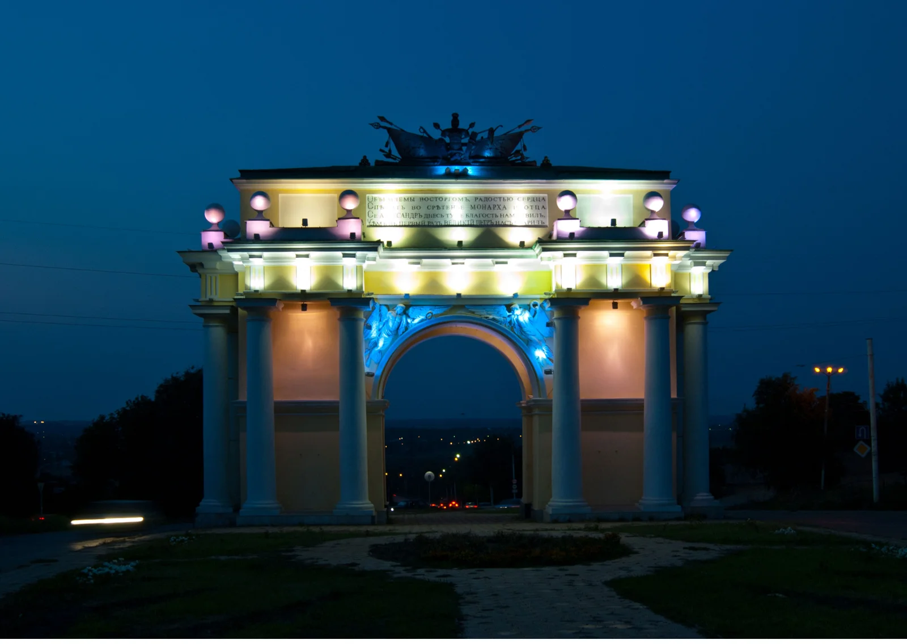

Недвижимость / Новочеркасск и рядомНайдите своё
Найдите своё
место в
Новочеркасске.
Квартиры, дома и участки — с вниманием к району, документам и вашей задаче.
Свой офис в городе · Народная, 1 · офис 114

Триумфальная арка
01 / От желания к выборуНачните с того,
Все варианты Начните с того,
что важно вам.
Частный сектор · публичное объявление
Участок в СТ «Надежда»
999 999 ₽
6 сотокСадоводствоКоммуникации по улице
Сведения из публичных объявлений офиса «Новочеркасск 2» на Циане. Цену, наличие и параметры необходимо подтвердить перед просмотром. Профиль офиса ↗
02 / Город складывается из местСначала — ваш район.
Сначала — ваш район.
Затем — ваш дом.
Посмотрите, как различаются направления. Выберите место под свой привычный маршрут.
Новочеркасск / схема направленийСхематично · без точных границ районов
04 / СобственникамУ вашего объекта
Обсудить продажу
У вашего объекта
есть своя история.
Поможем её раскрыть.
Начнём с характеристик, документов и вашей задачи. Обсудим подготовку объекта, объявление, показы и условия сделки.
01Разбор объекта
02Подготовка к продаже
03Показы и переговоры
04Сопровождение сделки

05 / Люди, к которым можно прийтиРядом.
Рядом.
В своём городе.
Александр Зеленьков — собственник офиса Домиан на Народной. Знакомство, разбор вашей задачи и обсуждение следующего шага можно начать с личного разговора.
Познакомиться с офисом.webp)
Хороший выбор начинается
с разговора.
Расскажите о задаче. Район, объект и следующий шаг обсудим вместе.